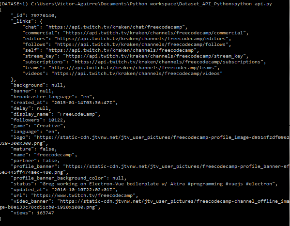
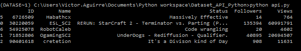

Creating a dataset wth api and python
The idea will be follow the article from medium Creating a dataset using an API with Python from this we will change code at will to fit more my personal style or just to try different things.
Import Libraries¶
There will be 3 main libraries to be use in this project:
-
requestthis will help use to get content from the API usign the methodget()and to decide the format of how are we getting this info usingjson()so we can handle the answer for he API using JSON. -
jsonwith this library we can work with JSON -
pandasthis will help us to create the dataframes that later can be export to a .cvs file.
we will import numpy as well, … just in case.
Understanding the API¶
We want first to understand what is the information that the API is giving us, what type of data and what values, so for that we are going to start by calling the API and display the content.
first, the API end point is https://wind-bow.glitch.me/twitch-api/channels/freecodecamp this API doesn’t require any authentication which will make the process easier
1 2 3 4 5 6 7 8 9 | import numpy as np import pandas as pd import requests import json url = "https://wind-bow.glitch.me/twitch-api/channels/freecodecamp" JSONContent = requests.get(url).json() content = json.dumps(JSONContent, indent=4, sort_keys=True) print(content) |
and the result is:

The screen-shot looks messy but we will see the response after explain a bit the code.
We use the variable URL in order to store the end point for the API, Later we use requests.get(url).json() that will give use the response of the API (URL) in a JSON format, as a final step we dump the data with dump() so we can see the content in a readable way, this is done thanks to the parameters indent=4 and sort_key=True.
1 2 3 4 5 6 7 8 9 10 11 12 13 14 15 16 17 18 19 20 21 22 23 24 25 26 27 28 29 30 31 32 33 34 35 | { "_id": 79776140, "_links": { "chat": "https://api.twitch.tv/kraken/chat/freecodecamp", "commercial": "https://api.twitch.tv/kraken/channels/freecodecamp/commercial", "editors": "https://api.twitch.tv/kraken/channels/freecodecamp/editors", "features": "https://api.twitch.tv/kraken/channels/freecodecamp/features", "follows": "https://api.twitch.tv/kraken/channels/freecodecamp/follows", "self": "https://api.twitch.tv/kraken/channels/freecodecamp", "stream_key": "https://api.twitch.tv/kraken/channels/freecodecamp/stream_key", "subscriptions": "https://api.twitch.tv/kraken/channels/freecodecamp/subscriptions", "teams": "https://api.twitch.tv/kraken/channels/freecodecamp/teams", "videos": "https://api.twitch.tv/kraken/channels/freecodecamp/videos" }, "background": null, "banner": null, "broadcaster_language": "en", "created_at": "2015-01-14T03:36:47Z", "delay": null, "display_name": "FreeCodeCamp", "followers": 11770, "game": "Creative", "language": "en", "logo": "https://static-cdn.jtvnw.net/jtv_user_pictures/freecodecamp-profile_image-d9514f2df0962329-300x300.png", "mature": false, "name": "freecodecamp", "partner": false, "profile_banner": "https://static-cdn.jtvnw.net/jtv_user_pictures/freecodecamp-profile_banner-6f5e3445ff474aec-480.png", "profile_banner_background_color": null, "status": "Some GoLang Today #go #golang #youtube", "updated_at": "2018-09-19T23:01:33Z", "url": "https://www.twitch.tv/freecodecamp", "video_banner": "https://static-cdn.jtvnw.net/jtv_user_pictures/freecodecamp-channel_offline_image-b8e133c78cd51cb0-1920x1080.png", "views": 216340 } |
From this response we get enough information to continue, we are going to use few properties:
_iddisplay_namestatusfollowersviews
Creating the dataset¶
First we will need to make a list that will contain the name of the channels that we want to get the information, later we will:
- Use the
append()method to populate a variable with the properties we want. - use the
DataFrame()from pandas library to create the dataframe which is a similar structure to a table
List of channels¶
1 2 | # List of channels we want to access channels = ["ESL_SC2", "OgamingSC2", "cretetion", "freecodecamp", "storbeck", "habathcx", "RobotCaleb"] |
Variable to save the information after hit the API¶
1 | Channels_list = [] |
Loop to get response for each channels¶
1 2 3 | for channel in channels; JSONContent = requests.get("https://wind-bow.glitch.me/twitch-api/channels/" + channel).json() Channels_list.append([JSONContent["_id"],JSONContent["display_name"],JSONContent["status"],JSONContent["followers"],JSONContent["views"]]) |
we use the [] to access the specific parameter, to this point the script will loop like this:
1 2 3 4 5 6 7 8 9 10 11 12 13 14 15 16 17 18 19 20 21 22 | import numpy as np import pandas as pd import requests import json url = "https://wind-bow.glitch.me/twitch-api/channels/freecodecamp" JSONContent = requests.get(url).json() content = json.dumps(JSONContent, indent=4, sort_keys=True) #print(content) channels = ["ESL_SC2", "OgamingSC2", "cretetion", "freecodecamp", "storbeck", "habathcx", "RobotCaleb"] channels_list = [] for channel in channels: JSONContent = requests.get("https://wind-bow.glitch.me/twitch-api/channels/" + channel).json() channels_list.append([JSONContent['_id'], JSONContent['display_name'], JSONContent['status'],JSONContent['followers'], JSONContent['views']]) #print(channels_list) dataset = pd.DataFrame(channels_list) print(dataset.sample(5)) |
producing this result:

sample(5) allow me to display 5 random records
Enhancing the Dataset¶
Now we can see that are few things we can improve in the dataset we are creating;
-
The headings: there right now just numbers, but we can name them to represent the columns in more meaningful way.
-
There are some empty cells we can remove them
The headings¶
we can use the method columns() from pandas to name the columns
1 2 3 4 5 | dataset = pd.DataFrame(channels_list) dataset.columns = ['ID', 'Name', 'Status', 'Followers', "Views"] print(dataset.sample(5)) |

Removing rows with Empty columns¶
In this case we are going to use dropan(axis = 0, how = 'any', inplace = True)
this will drop the rows that has some empty columns, after this we need to reindex the dataframe for that we use dataset.index = pd.RangeIndex(len(dataset.index))
1 2 | dataset.dropna(axis = 0, how = 'any', inplace = True) dataset.index = pd.RangeIndex(len(dataset.index)) |
so the code will be:
1 2 3 4 5 6 7 8 9 10 11 12 13 14 15 16 17 18 19 20 21 22 23 24 25 26 27 28 29 30 | import numpy as np import pandas as pd import requests import json url = "https://wind-bow.glitch.me/twitch-api/channels/freecodecamp" JSONContent = requests.get(url).json() content = json.dumps(JSONContent, indent=4, sort_keys=True) #print(content) channels = ["ESL_SC2", "OgamingSC2", "cretetion", "freecodecamp", "storbeck", "habathcx", "RobotCaleb"] channels_list = [] for channel in channels: JSONContent = requests.get("https://wind-bow.glitch.me/twitch-api/channels/" + channel).json() channels_list.append([JSONContent['_id'], JSONContent['display_name'], JSONContent['status'],JSONContent['followers'], JSONContent['views']]) #print(channels_list) dataset = pd.DataFrame(channels_list) #Name the columns dataset.columns = ['ID', 'Name', 'Status', 'Followers', "Views"] #drop rows with empty columns dataset.dropna(axis = 0, how = 'any', inplace = True) #re-index the DataFrame dataset.index = pd.RangeIndex(len(dataset.index)) print(dataset.sample(5)) |